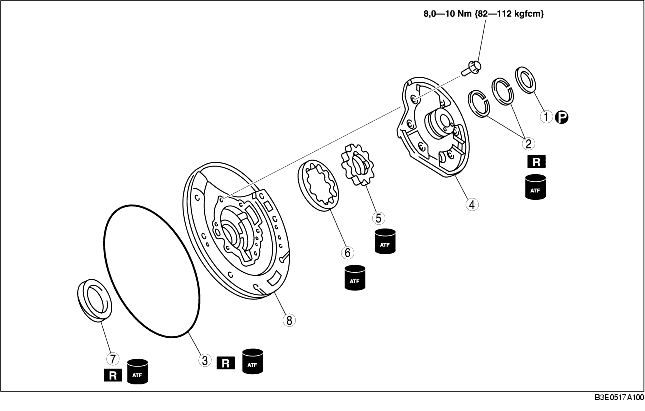

1. Utför förkontrollen före isärtagningen.
(Se Förkontroll av oljepump.)
2. Ta isär i den ordning som tabellen anger.
3. Montera i omvänd ordning jämfört med demonteringen.

|
1
|
Tryckbricka
|
|
2
|
Tätningsringar
|
|
3
|
O-ring
|
|
4
|
Oljepumpens kåpa
|
|
5
|
Inre rotor
|
|
6
|
Yttre rotor
|
|
7
|
Oljetätning
|
|
8
|
Oljepumpens hus
|
• Lossa bultarna jämt i det mönster som visas och ta bort oljepumpens kåpa från oljepumpens hus.
• Märk upp den yttre och den inre rotorn utan att skrapa eller skada dem och ta sedan bort pumphuset.
1. Stryk på automatväxellådsolja på den nya oljetätningen och montera den på oljepumpen med hjälp av specialverktyget.
2. Mät spelet mellan änden på pumphuset och den yttre rotorn och den inre rotorn i fyra punkter runt periferin.
3. Mät spelet mellan yttre rotor och inre rotor.
4. Stryk på automatväxellådsolja på yttre och inre rotorer.
5. Passa in märkena och montera yttre och inre rotorer.
6. Montera oljepumpens fläns.
7. Montera oljepumpens kåpa i oljepumpens hus.
8. Dra åt bultarna gradvis och jämnt i den ordning som framgår av bilden.
9. Stryk på automatväxellådsolja på den nya O-ringen och montera den på oljepumpen.
10. Stryk på automatväxellådsolja på nya O-ringar och montera dem på oljepumpens kåpa.